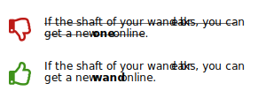
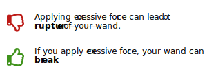
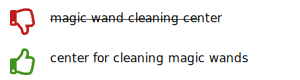

Learn a few tips to make your text easier to translate and less likely to cause
translation errors.
Clarity
A text that is easy to understand is usually also easier to translate. To make your
writing clearer, use these tips:
Avoid overly long sentences and paragraphs.
Repeat important words to avoid misunderstanding.

Don't describe more than one action in a sentence unless writing about strictly
related actions.
Use words such as "and," "then," "but," "a," "the," "this," and "that" to make
your message clear.
Grammar
You can make your text easier to understand by using certain grammatical forms. To
make your writing clearer, follow these rules:
Express actions with verbs, not nouns.

Use active voice.
Split clusters of nouns into smaller logical units.

Formating
Search your text for unintended linebreaks and punctuation marks (such as periods in
place of commas). Translation tools may misinterpret such characters and split
sentences into separate units. This can lead to translation errors and
inconsistencies.
Avoid using pagebreaks and empty lines to layout your document. The same content can
have a different volume in different languages.
Important: When localizing a DITA project, always send
the translators your source files rather than the output (such as PDF or HTML
files).